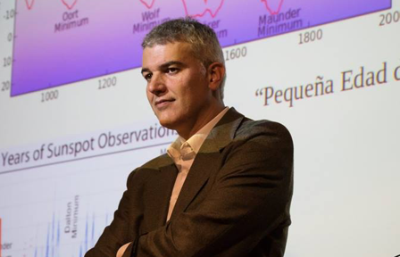

@PyConES
@PyConES

Héctor
Socas-Navarro
Físico en el Instituto de Astrofisica de Canarias
Se doctoró en la Universidad de La Laguna en 1999. Su trabajo recibió el premio de la Sociedad Española de Astronomía a la mejor tesis doctoral durante el bienio 1998/99. Entre 1999 y 2008 estuvo trabajando en EEUU, en el National Center for Atmospheric Research, haciendo investigación, desarrollando instrumentación para telescopios terrestres y trabajando para las misiones espaciales Hinode (de la agencia espacial japonesa JAXA) y SDO (de NASA). Además tuvo una gran participación en el desarrollo del gran telescopio solar de EEUU, actualmente en construcción en Hawai. Desde 2008 trabaja en el IAC donde entre otras cosas ha sido el responsable científico del futuro Telescopio Solar Europeo (EST).